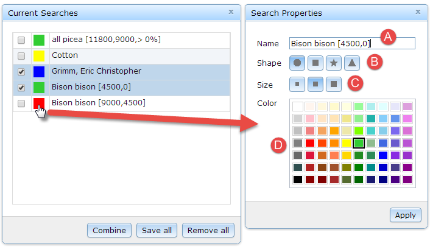

- Click the
 button to open the Current Searches list.
button to open the Current Searches list.
- Click a search layer color sample to open the Search Properties.

- Modify the desired properties and click the Apply button to make the change(s).
- edit label to identify search in layer list and table tab title
- select marker shape
- select marker size: small, medium, large
- select marker color
- When done, close the Search Properties window.
Created with the Personal Edition of HelpNDoc: Write eBooks for the Kindle